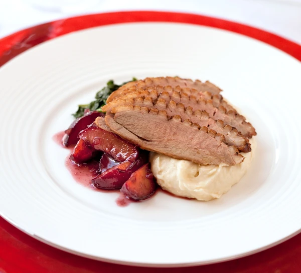

Magret de Canard Recipe

This easy yet impressive recipe makes a stylish main course for a special
occasion.
Ingredients:
- 2 duck breasts
- Salt and pepper
- A knob of butter
Instructions:
-
Use a very sharp knife to score the skin on each duck breast, cutting
1⁄2" diamonds across the entire surface.
- Season all over with salt and pepper.
-
Add the duck breasts to the pan, skin side down, and cook for 5 to 6
minutes, until plenty of fat has rendered and the skin is a deep golden
brown.
-
Flip the breasts and cook for another 8-10 minutes for medium-rare (rosy
in the middle), or longer if you want it cooked more.
Enjoy your meal! 😊